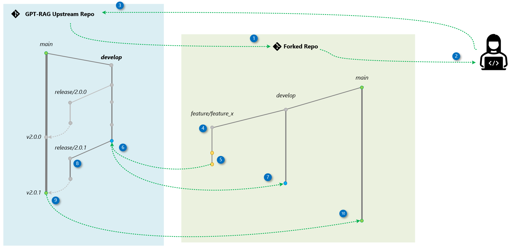

Contributing
We appreciate contributions and suggestions for this project!
While anyone can submit pull requests at any time, we created a contributor form to help match volunteers with areas where we need the most help. It's optional but helps us better organize and direct contributions!
Ways to Contribute
- Issues: Report bugs, propose enhancements, or share feature requests.
- Comments: Engage in discussions, help others, and review proposals.
- Documentation: Improve guides and clarity for new users.
- Design: Contribute to open design discussions and new patterns.
- Tests: Strengthen reliability through unit and integration tests.
- Code: Submit fixes, enhancements, or new modules via pull requests.
Contribution Guidelines
To maintain project quality, the following items will be considered during the PR review.
Adhering to these best practices will streamline the review process.
-
Use the Correct Base Branch: Runtime component changes target
develop. For this documentation site, create afeature/*branch fromdocsand targetdocsin your pull request. Keep documentation and runtime changes in their owning repositories and link dependent pull requests. -
Keep Pull Requests Small: Aim to make your pull requests as focused and concise as possible. This makes it easier to review and ensures quicker integration into the codebase.
-
Associate with Prioritized Issues: Ensure that each pull request is linked to a specific, prioritized issue in the project backlog. This helps maintain alignment with project goals and ensures that work is being done on tasks of the highest importance.
-
Include Documentation: Every new feature or functionality must be accompanied by clear documentation explaining its purpose and configuration. This ensures others can use it independently in a self-service manner.
-
Bugs and Documentation Corrections: Pull requests that address bugs or correct documentation do not need to be associated with prioritized issues. These can be submitted directly to maintain the quality and accuracy of the project.
-
Multi-Repo Dependencies: If your pull request has dependencies on updates in other repositories, make sure to mention this in the pull request description. Additionally, create a corresponding pull request in the other repository to ensure synchronized updates across all related projects.
Documentation
All project documentation is centralized in MkDocs and hosted at https://aka.ms/gpt-rag-docs. When contributing to documentation:
-
Use AI Tools Wisely: GitHub Copilot and similar tools can help generate documentation, but always review and refine the output. Avoid excessive use of emojis, dashes, bullets, and images. Keep documentation clean, clear, and professional.
-
Focus on Clarity: Prioritize straightforward language and well-structured content. Documentation should be easy to read.
-
Follow Existing Patterns: Review existing documentation pages to maintain consistency in style, formatting, and tone.
-
Test Your Changes: Preview your documentation locally using MkDocs before submitting to ensure proper rendering.
Run these commands from a documentation checkout of Azure/GPT-RAG, not a
runtime component checkout. Use a virtual environment; the documentation
workflow uses Python 3.11, independently of the runtime components' Python
version.
python -m pip install -r requirements-docs.txt
python -m mkdocs build
python -m mkdocs serve
build renders the site locally; serve starts a local preview. Neither
publishes documentation. Do not run mkdocs gh-deploy as a preview check:
merging to docs triggers the publishing workflow.
When documenting a coordinated runtime change, keep the documentation PR in draft until the component interfaces and commands are confirmed. Record the component PRs and merge order in its description. Do not describe proposed checks, package layouts, or repository rules as shipped behavior. Review deployment, authentication, and continuity examples too; record a no-change assessment when their supported behavior is preserved.
Python Quality Checks
Develop adoption status
As of 2026-09-09, the following quality/package changes are adopted on the
component develop branches, not released through the umbrella
main manifest.
Released component pins remain unchanged by this adoption.
| Component | Adoption PR | Adopted merge commit |
|---|---|---|
| UI | #110 | 151c0b2d3d783e835e9565fde8dcc818c8f9f4b1 |
| Ingestion | #296 | 18c18431fa8a83d4bcc1362f60bf1c6092ed865a |
| Orchestrator | #346 | c6339ee5738c0a0bb890b43f204f2d4ba1025157 |
The explicit initial administrative approval
accepts 189 individually justified existing exceptions: 92 orchestrator,
67 ingestion, and 30 UI. All 189 records are active in the adopted develop
ledgers under that actual administrative approval; this is not approval of
future exceptions. It authorizes initial adoption merges and required-check
activation, not production deployment. This is administrative bootstrap
acceptance, not independent GitHub review and not proof of green checks.
Orchestrator's activation head
360065cb194f33e631fdf34c0e1c1eeb11935da3
is included in the adopted merge above. Initial
CI run 34352193611
records 2,332 passing tests and 4 skips; frontend build, lint, typing,
architecture and exceptions pass. Only bootstrap policy and the aggregate
quality-gate fail. Initial adoption was administratively authorized despite
those bootstrap failures; the run remains failed, not a green reference.
Active rules and reference evidence
The following additive rulesets are active on both develop and main;
existing repository rules were retained. Required checks are strict (the branch
must be up to date), bound to GitHub Actions app 15368, with no bypass actors.
Each ruleset requires one approval, code-owner review, dismissal of stale
approvals, approval of the latest push, and resolved review threads, and blocks
deletion and non-fast-forward updates. These ongoing review requirements do not
turn the initial administrative adoption into independent review.
| Component | Active ruleset | Exact required check names |
|---|---|---|
| UI | 22641145 | quality-gate, unit-tests, container-tests |
| Ingestion | 22640997 | quality-gate, unit-tests, frontend-checks |
| Orchestrator | 22663326 | quality-gate, tests, frontend build |
Clean reference runs now demonstrate green evaluation against the adopted
develop policy, rather than the earlier bootstrap base:
| Reference PR | Recorded head and outcome |
|---|---|
| UI #112 | Restored head 69492e4a965263362e6d17b7c3b7a8779047dd7e, run 34354232272 succeeded; tree identical to initial reference f4cf2d2. Closed unmerged. |
| Ingestion #308 | Initial reference c415272 against adopted base 18c18431, run 34352952858: all eight jobs passed. Restored head 03cb8a218e47a3e3cee3f6621e3a186bf9cf596e, run 34354094883 succeeded with an identical tree. Closed unmerged. |
| Orchestrator #359 | Initial head 6a7ad2c5127875666403279a31874fac670374d0 against actual adopted base c6339ee5738c0a0bb890b43f204f2d4ba1025157, run 34353356772: all eight jobs passed. Fixture-only revert 707231a228f9c3b1cd281e4b7e16169fb1149147, restoration run 34381235501: all eight jobs passed, with CLA also green. Restored tree a938d1105f03a758e15e2f4ab1875a3b458a9d98 is identical to the initial reference. Closed unmerged. |
Deliberate negative controls tested suppression growth without breaking functional tests:
- UI: head
344ee17da79c52df38204928021d2da16373afd0, run 34353672894 failed with RuffRUF100for unnecessarynoqa: F821atconstants.py:4, suppression-growth policy failure and failedquality-gate. Functional tests passed; the coordinator recorded the PR asBLOCKEDunder ruleset22641145. - Ingestion: head
c11e995e69a7c579308da48ae964d4e342af5ef6, run 34353567295 failed with RuffRUF100for unnecessarynoqa: F401atutils/deployment_mode.py:34, new-suppression policy failure and failedquality-gate. This is not evidence that F401 itself was enforced. Functional tests passed; the coordinator recorded the PR asBLOCKEDunder ruleset22640997. - Orchestrator: head
e9a8c1584032c3381a72cbfa1a96aba270832fb9, run 34380617414 failed lint with RuffRUF100for unusednoqa: F821atsrc/connectors/types.py:1. Policy failed withNew or broadened suppression requires protected policy review, and the aggregatequality-gatefailed; all other jobs passed. Evaluation used adopted basec6339ee5738c0a0bb890b43f204f2d4ba1025157withbootstrap=falsethroughout initial, negative and restored reference phases, not the bootstrap exception. The coordinator recordedBLOCKEDandREVIEW_REQUIREDunder the active rules: this is not evidence of a block caused exclusively by CI. Only the fixture was reverted; the restored green run and unmerged closure are recorded above.
All three fixtures were reverted before their reference PRs were closed;
none of the fixtures was merged. Green checks alone do not satisfy required
reviews or authorize a merge. Active rules also cover main, where the adopted
policy is not yet present: future release PRs fail closed until a normal release
includes that policy. This adoption does not change main, tags or release pins,
and is not a reason to bypass or weaken those rules.
This evidence supports development-policy adoption and the specific controls tested, not live identity/ACL validation, cross-component compatibility, durable recovery or production readiness. No live validation target or test principals have been supplied for this work, and no production deployment is authorized. Those validation gaps remain open; offline functional, container and policy tests do not close them.
The older source pins, test counts and CI outcomes below and in linked service guides remain implementation evidence at their recorded revisions. Their “unmerged”, “inactive proposal” and pending-bootstrap descriptions are historical: the adoption record above supersedes those status claims, not their bounded behavioral evidence. No historical red CI run is reclassified as green. Use the adopted merge commits for current contributor policy; use the released manifest for deployed-version guidance.
Historical contributor checkpoints, not proof of activated merge policy
The commands in this section apply only to the implementation checkpoints
linked below for #681,
coordinated in #689.
They are not instructions for the currently released components.
No activated, green merge policy is established by these checkpoints.
Initial administrative exception acceptance is now recorded above. Passing tests or
individual typing/architecture results do not establish a green quality
gate or required-check activation.
The UI package, history and failure-boundary code is now adopted on develop.
This does not complete cross-component integration, live validation or recovery.
Repository-local setup
Work in the relevant component checkout, not the umbrella or documentation
checkout, using an isolated Python 3.12 environment. Read its AGENTS.md and
the linked PR before running the commands. Local evidence used Python 3.12.9;
backend CI also exercised Python 3.12.14. The quality pins are Ruff 0.16.5,
mypy 2.3.1, Import Linter 2.14, and Grimp 3.16.
Install the checked-out requirements-quality.txt; do not substitute
tool versions from the original proposal. These are development dependencies,
not additions to runtime images.
| Historical component checkpoint (not the adopted head) | Contributor source at the recorded revision |
|---|---|
Azure/gpt-rag-orchestrator#346, 6b652d8 |
AGENTS.md |
Azure/gpt-rag-ingestion#296, f51f515 |
Python quality guide |
Azure/gpt-rag-ui#110, ee35c9f |
Python development guide |
Fetch the PR's actual target before running checks. In the examples, replace
<fetched-protected-target-sha> with that target commit, not the candidate
commit. These component PRs target develop; release work must use its actual
target instead. Reuse the same base and unchanged candidate for test evidence
and quality reports.
Orchestrator
python -m pip install -r requirements.txt
python -m pip install pytest pytest-asyncio pytest-mock jsonschema
python -m pip install -r requirements-quality.txt
$Base = "<fetched-protected-target-sha>"
python -m pytest -q --junitxml=.artifacts\pytest.xml
python -I -S .github\scripts\check-quality.py --check all --base-ref $Base --report .artifacts\quality.json --test-results .artifacts\pytest.xml
Ingestion
python -m pip install -r requirements.txt
python -m pip install pytest pytest-asyncio
python -m pip install -r requirements-quality.txt
$Base = "<fetched-protected-target-sha>"
python -m pytest tests -q --junitxml=.artifacts\pytest.xml -o junit_family=legacy
python -I .github\scripts\quality-evidence.py --junit .artifacts\pytest.xml --base-ref $Base --report .artifacts\test-evidence.json
python -I .github\scripts\check-quality.py --check all --base-ref $Base --test-evidence .artifacts\test-evidence.json --report .artifacts\quality.json
These interfaces intentionally differ: orchestrator accepts JUnit through
--test-results; ingestion first binds JUnit to same-run JSON with
quality-evidence.py, then consumes it through --test-evidence. Do not
reuse stale evidence or treat a test name in a policy record as proof that
the test passed.
The interpreter startup modes also differ. Orchestrator requires python -I -S
for its checker and aggregate, exposing installed wheel paths without site
initialization. Ingestion uses python -I for its checker, evidence binder and
aggregate; its installed tooling and site environment remain trusted. Do not
treat -I alone as disabling all installed startup hooks. These flags do not
change the pytest, UI or application-startup commands shown separately.
Both backend checkers accept --check all, or one of lint, typing,
architecture, exceptions, and policy for diagnosis. Exit 0 means the
requested checks passed, 1 means violations, and 2 means invalid input
or incomplete execution. A missing report, tool failure, or a passing
individual check is not a passing full gate. Existing behavior tests and
frontend jobs remain separate obligations in the component workflows.
Ingestion operator frontend
In the recorded ingestion candidate, use Node 22 (at least 22.12 for the
existing Vite 8 toolchain), not Node 20.14. From its frontend directory, run:
npm ci
npm test
npm run lint
npm run build
Do not bypass peer-dependency validation. The candidate aligns React DOM and
its types with React 19, uses Tailwind 4's PostCSS adapter with the existing
theme, and fixes the corresponding JSX/Vitest configuration types. It does not
redesign the dashboard or change Python runtime pins or Docker base images.
The new same-workflow frontend-checks job runs these maintained commands;
the aggregate requires actual success and rejects missing, skipped, cancelled
or failed frontend execution. A passing Python report alone is insufficient.
Execution trust is separate from local results
Installing a candidate's dependencies and running its tests or checker executes code from that candidate. A virtual environment separates installed packages; it is not a security sandbox. Review unfamiliar PR code before executing it, and use a disposable environment without deployment credentials rather than an operator session or a production workload identity.
For acceptance, review the tool execution environment as well as the selected policy revision. A checker loaded from the protected base does not, by its path alone, prove that its interpreter, imported tools, plugins and configuration are independent of the candidate. Pinned versions and bound report hashes do not establish that isolation either.
The recorded backend milestones add isolated tool startup and source-analysis paths, reject executable plugins/custom contracts, and keep candidate dependency installation in the separate behavioral CI job. Static CI jobs install runtime dependencies from the protected checkout; at these historical checkpoints, first-adoption candidate tooling ran only under the blocked bootstrap path. This is static source-analysis isolation, not an OS sandbox or protection against a compromised interpreter or installed tool. Keep the repository-specific startup flags and reviewed runner; do not bypass a failed check by dropping isolation, and do not treat an internal helper as a new contributor command. The local examples remain diagnostics, not substitutes for the recorded CI and enforcement evidence above.
Typing scope and reviewed exceptions
The checkpoint .quality/typing-scope.json files describe incremental blocking
coverage, not whole-repository strict typing:
| Component | Initial blocking files, including new helpers |
|---|---|
| Orchestrator | src/schemas.py, src/connectors/types.py, src/plugins/retrieval/retrieval_types.py, src/plugins/nl2sql/nl2sql_types.py, src/connectors/obo.py |
| Ingestion | telemetry/audit_contract.py, telemetry/audit_sanitizer.py, jobs/runtime.py |
Newly discovered runtime modules join blocking typing scope. Imported
diagnostics outside that scope remain visible in reports; they are not
silently covered by a global missing-import ignore. Both initial
.quality/typing-baseline.json files are empty. A reviewed legacy baseline
identifies individual diagnostics and multiplicity, not just an error count.
Moving a module must preserve its identity and coverage, not erase its debt
or create a new allowance.
Orchestrator's module surface inventory
records current paths/import names, ownership, public exports, allowed importers,
compatibility aliases and typing status. Those current-path records are separate
from the immutable adoption names in policy.json. Preserve stable identities
across moves rather than reclassifying covered code as legacy. Editing a surface
record does not independently approve new access or a larger public API.
Scope reductions, baseline growth, new suppressions, or changes to the checker, workflows, tool pins, and policy need explicit maintainer review. Do not edit records to make a failing candidate approve itself, generate baselines automatically in CI, or exempt entire files from review.
The historical backend .quality/exceptions.json ledgers contained proposed records:
orchestrator had ninety-eight
and ingestion had sixty-five.
Neither checkpoint had an active exception. These are not the adopted ledger
counts; the initial administrative acceptance above supersedes their pending
status. New proposals do not waive lint or broad-handler findings.
A proposed exception must identify the exact source
site and try/handler fingerprint, its necessity, expected failure outcome,
safe diagnostic path, review reference, and passing named failure tests.
Logging or re-raising alone is not an exemption. Preserve explicitly
best-effort audit side effects without using them to excuse failed primary
operations. Characterization tests that record legacy failure behavior do not
make that behavior accepted or approved. Follow the owning repository's schema
rather than copying exception records between components.
The recorded backend checkpoints bind retained broad handlers to individual
proposals and named failure evidence. That code-delivery milestone does not
approve the handlers or activate the policy. In particular, orchestrator
earlier characterization retained identity fallbacks and detached persistence.
The unmerged ea61bc7 source-pinned ADR-0006 implementation
supersedes the MAF/multimodal identity fallbacks with required-user fail-closed
retrieval, retains eligible service-only access, suspends all automatic profile
access/extraction, and leaves ordinary history best effort. Live ACL proof and
durable completion are not claimed. The separately delegated
H1 API-key recovery choice
retains existing environment fallback, not new runtime code or ingestion's opt-in.
The scoped orchestrator follow-up replaces configured nullable
retrieval failure with the
existing safe failed-turn contract,
while preserving explicit retrieval opt-outs and legitimate empty results.
At those checkpoints, updated fingerprints and real strategy-to-SSE evidence
were proposals, not active approvals; see the subsequent administrative acceptance above.
Review those outcomes individually; zero unproposed sites is not zero risk.
Adoption is separate from workflow availability
The adopted component PRs introduce an always-evaluated quality-gate alongside
their existing tests. At the historical checkpoints, ordinary policy approval
deliberately failed at bootstrap because the protected base had no evaluator.
A workflow file, candidate
approval string, or uploaded report cannot activate repository protection.
Initial administrative bootstrap approval is recorded above. Before claiming enforcement, obtain evidence that authorized administrators require the quality gate and existing checks, enforce latest-head code-owner review, dismiss stale approvals, restrict bypass, and prove clean and deliberately failing PR outcomes. Repair policy through a reviewed PR rather than disabling controls. All three components now have recorded adoption, active settings, clean references, negative controls, green restorations and unmerged reference-PR closures. This completes that bounded development-policy evidence, not the live validation gaps described above. This documentation change performs none of those administrative or runtime actions.
UI Package Contributor Setup
Historical package checkpoint, now adopted on develop
This section describes Azure/gpt-rag-ui#110
at ee35c9f,
not the released UI or final adopted head (see the adoption table above).
Accepted installed-package evidence is separate from
cross-component and live deployment acceptance. Package
installation is a contributor setup change, not an instruction to change
deployed startup commands or enable hosted continuity.
Install and run from the UI checkout
Use an isolated Python 3.12 environment. The checkpoint's
pyproject.toml
uses setuptools to install src/gpt_rag_ui/ and the explicit legacy adapters.
requirements.txt remains the runtime dependency authority; install it before
installing the code package:
python -m pip install -r requirements.txt
python -m pip install -r requirements-quality.txt
python -m pip install --no-deps -e .
python -m unittest discover -s tests -v
With the existing application configuration in place, run from the UI checkout using the unchanged startup target:
uvicorn main:app --host 0.0.0.0 --port 8080
Editable installation is for contributor use. The checkpoint Dockerfile
installs the package non-editably with pip install --no-deps . after runtime
requirements and retains the same Uvicorn target and /app working directory.
An editable-source test alone does not prove installed-wheel or container
compatibility.
At ee35c9f, the
installed-package tests
create a clean virtual environment without inherited system packages, install
the existing requirements.txt, run pip check, and install a real wheel
non-editably. Isolated python -I subprocesses run outside the checkout;
only tests, not application source, are copied for the behavioral suite.
The eleven installed test methods include the copied behavioral suite,
installed-module origin assertions, synthetic Entra/Copilot startup and invalid
configuration cases, and Chainlit HTTPSession file persistence and cleanup
under the staged asset root, plus standalone download/OpenAPI failure outcomes.
The later pre-adoption UI checkpoint
aef9546
adjusts failure tests and runtime outcomes: OpenAPI generation failure returns
uncached HTTP 500 with no metadata fallback; failed attachment ingestion stops
the accompanying question with reattach/resubmit guidance while preserving
confirmed bookkeeping. A failed first upload restores the prior session
conversation ID; manually reattaching all files and resubmitting ingests them
under a fresh conversation before sending the question. Existing conversations
retain their ID and ownership checks. Failed panel owner indexing retains ordinary chat but
denies panel access and logs required repair without automatic recovery.
See operator guidance. Ingestion
eb42bbb
adds configured-fallback diagnostics with the existing environment opt-in and
legacy overview feedback.available; see
source order and recovery.
These source-specific behavioral tests do not approve proposed exception
records, establish new CI results, or change the shipped manifest.
Historical CI run 34050677391
passed 521 unittest cases and a separate Linux container job with 455 behavioral
cases and no skips, retaining the 12 history-boundary cases from the earlier
653660e milestone. The container job uses the existing Dockerfile and runs
with --network none, exercising a real uvicorn main:app listener,
ready/not-ready local HTTP responses, staged CSS/VERSION, and installed module
origins. This supersedes the earlier clean-environment and Linux-evidence gaps;
an unavailable local Docker engine is not a blocker for that bounded
installed/container evidence; it does not close live validation gaps.
These synthetic installed/container results are not live Azure or identity
integration, production recovery, cross-component compatibility acceptance, approved
exceptions, or activated repository protection. That historical full quality gate was red.
Pre-adoption source CI run 34307187745
at aef9546 passes unit and container tests, but lint, policy, exceptions,
and the aggregate quality gate fail. Passing behavioral evidence does not
approve exceptions or prove post-adoption enforcement; administrative acceptance
is separately recorded above.
Find the owning implementation
All locations below are under src/gpt_rag_ui/. The frozen
migration inventory
records the initial module map and legacy export surface. For current owners
after the history split, use the checkpoint
policy inventory
and implementation rather than treating the initial map as the final layout.
| Responsibility | Owning location and examples |
|---|---|
| Startup composition | bootstrap.py; root main.py hands off asset setup and exposes the ASGI application |
| HTTP routes and framework adaptation | api/: panel, download and embedding routes, OAuth, history data-layer/session adapter and chat/feedback callbacks |
| Identity, tokens and sessions | auth/: Entra, OAuth, embedding and panel authentication |
| Service transport | clients/: orchestrator, ingestion, hosted agent, managed Conversations, Blob and panel Cosmos |
| User operations | services/: chat, citations, history, conversation/download policy, continuity, feedback and panel operations |
| Configuration and asset root | config/: App Configuration, backend/panel/continuity settings and resources.py |
| Instrumentation | telemetry/monitoring.py |
| Pure shared values | util/constants.py |
At this recorded implementation milestone, api/history.py owns OrchestratorDataLayer,
the BaseDataLayer callbacks, the fresh-instance get_data_layer factory,
idempotent registration, ambient session access, consume-once request metadata,
and selected-conversation updates. services/history.py owns HistoryService,
the single in-memory user cache and operations using explicit
HistoryOperationContext. Ownership is checked before the API selection
callback and rename-token resolution. The root datalayer adapter preserves
OrchestratorDataLayer and get_data_layer, now exported from the API owner.
Citation rendering continues to take explicit conversation_id, principal_id,
and copilot_session_id values without reading Chainlit context. Existing
Chainlit data/user types are still reused by the history service. The bounded
history/session separation does not claim universally framework-free services
or cross-component compatibility acceptance.
This history adapter uses authenticated orchestrator conversation APIs, not a UI-owned Cosmos client. Separating its framework responsibilities is not a storage migration or a change to the selected chat backend. Keep classic history and the separately gated hosted continuity contract distinct.
Implement behavior in its canonical owner, not the root adapters. Preserve
the inventoried public imports while keeping one configuration/client/state
owner. Package implementations must not import legacy adapters. Tests that
patch private collaborators should patch their canonical owner; retain
separate public-import compatibility tests rather than adding sys.path
modifications or sys.modules proxies.
Assets and checkpoint quality scope
Code installation does not replace the staged application assets: public/,
.chainlit/, chainlit.config.yaml, chainlit.md, and VERSION.
config/resources.py
resolves the existing CHAINLIT_APP_ROOT first, then the source adapter
directory when it contains chainlit.config.yaml, otherwise the working
directory. Set the asset root before startup when using installed code from
another directory. Keep assets and writable application paths outside
site-packages; a wheel alone is not a self-contained deployment bundle.
The UI checkpoint uses the same four quality-tool pins listed for the backends. Its CI static evaluator has a separate virtual environment containing protected runtime requirements and tool pins, not the candidate package, editable metadata or build backend. Ruff/mypy and the architecture worker use isolated execution without importing candidate application code. This differs from the contributor environment intentionally used for behavioral tests; it does not change the local receipt interface.
For a local same-run unittest receipt, use
run-unittest.py
and pass that receipt to the UI quality checker:
$Base = "<fetched-protected-target-sha>"
$env:QUALITY_RUN_ID = [guid]::NewGuid().ToString()
python .github\scripts\run-unittest.py --base-ref $Base --report .artifacts\unittest.json
python .github\scripts\check-quality.py --check all --base-ref $Base --test-evidence .artifacts\unittest.json --report .artifacts\quality.json
Set QUALITY_RUN_ID once per local run and keep the base, candidate and source
unchanged across both commands. CI uses its GitHub run ID and attempt instead.
The runner uses standard unittest discovery; the CI aggregate requires the
complete test_*.py pattern. Failed, skipped or expected-failure tests cannot
satisfy referenced passing evidence. The UI receipt is not interchangeable
with ingestion's JSON or orchestrator's JUnit, even though UI and ingestion
both use a --test-evidence flag. Receipt integrity hashes are not approval;
protected evaluation and actual same-run job outcomes are still required.
The UI typing scope
retains the stable IDs for chat_backend, panel_config, and
hosted_continuity_config at their new config/ locations and includes newly
introduced package modules and legacy adapters. Consult that complete
inventory rather than assuming every moved implementation is strictly typed.
Namespace modules also receive coverage; explicit mypy package bases resolve
their identities without adding runtime sys.path workarounds.
The exception ledger
at this historical checkpoint contained 28 individually proposed boundaries and zero active approvals,
not an empty ledger or an inherited blanket waiver. Each proposal identifies
the exact operation/handler, necessity, observable outcome, diagnostic path and
executed failure tests. This milestone passes lint, typing and architecture,
but exceptions, policy and the aggregate failed there. These are not the current
30 active UI records or current enforcement status; see the adoption record above.
Neither proposed records nor passing behavior tests alone establish handler
approval or active repository rules.
Code Update Workflow
We use a simplified version of the Fork and Branch Workflow alongside Git Flow for branching strategy. The main branch always contains deployment-ready code, while the develop branch serves as our integration branch.
Contributors create feature branches from develop in their forks. Once changes are completed, they submit a pull request to the develop branch in the upstream repository. After review and approval, reviewers merge the changes into develop. Weekly, maintainers group these changes into a pull request from develop to main for final review and merging.
Process Overview
This section outlines the contribution process, highlighting the key actions for both contributors and maintainers. The accompanying diagram visually represents the workflow.

1) Fork the Repository
Create a copy of the GPT-RAG upstream repository under your own GitHub account.
2) Clone Locally
Download your forked repository to your local machine.
3) Add Upstream
Link the original GPT-RAG upstream repository as upstream to keep your fork synchronized.
4) Create a Feature Branch
From your fork’s develop branch, create a feature branch for your change (e.g., feature/feature_x).
5) Commit and Push Changes
Implement your updates locally, commit, and push them to your fork on GitHub.
6) Open and Merge the Pull Request to develop
Open a PR from your feature branch in your fork to the upstream repository’s develop branch.
7) Sync with Upstream develop
After your PR is merged, update your fork's develop branch with the latest changes from the upstream.
8) Create a Release Branch (Maintainers)
When the develop branch is ready for release, create a branch named release/x.y.z from your fork's develop. This branch will be tested and validated before merging to main.
9) Open a Pull Request to Upstream main (Maintainers)
Once the release is validated, open a PR from your release branch to the upstream main. After the merge, maintainers will create a version tag (e.g., v2.0.1).
10) Sync Your Fork
Finally, update both your fork’s main and develop branches to reflect the latest upstream state.
Step-by-Step
Here’s an example of implementing a feature called conversation-metadata in the gpt-rag-orchestrator repository.
1) Create a Fork
https://github.com/<your-github-user>/gpt-rag-orchestrator.git
2) Clone Your Fork Locally
git clone https://github.com/<your-github-user>/gpt-rag-orchestrator.git
3) Set Upstream Remote
git remote add upstream git@github.com:Azure/gpt-rag-orchestrator.git
4) Create a Feature Branch
git checkout -b feature/conversation-metadata develop
5) Make and Push Your Changes
git add .
git commit -m "Implemented conversation metadata"
git push origin feature/conversation-metadata
6) Open and Merge the Pull Request to develop
- 6a. Create the PR:
Go to your fork on GitHub → click New Pull Request →
Base:
Azure/gpt-rag-orchestrator→developCompare:<your-github-user>/gpt-rag-orchestrator→feature/conversation-metadata - 6b. Maintainer Review:
The maintainers will review, request changes if needed, and merge the PR into the upstream
develop.
7) Sync Your Fork’s develop
git fetch upstream
git checkout develop
git merge upstream/develop
git push origin develop
8) Create a Release Branch (Maintainers)
git checkout -b release/2.0.1 develop
git push origin release/2.0.1
9) Open a Pull Request to Upstream main (Maintainers)
- Base:
Azure/gpt-rag-orchestrator→main - Compare:
<your-github-user>/gpt-rag-orchestrator→release/2.0.1 - After review and merge, maintainers tag the release (e.g.,
v2.0.1).
10) Sync Your Fork After Tag Creation
git fetch upstream
git checkout main
git merge upstream/main
git push origin main
Note for Documentation Contributions: When contributing to documentation, target the
docsbranch instead ofdevelop. It is recommended to create a dedicated clone specifically for documentation work to avoid mixing documentation changes with code updates. This keeps documentation workflows separate and simplifies the review process.
Legal and Code of Conduct
Before contributing, you'll need to sign a Contributor License Agreement (CLA) to confirm that you have the rights to, and do, grant us permission to use your contribution. More details can be found at Microsoft CLA.
This project adheres to the Microsoft Open Source Code of Conduct. For more information, please visit the Code of Conduct FAQ or contact opencode@microsoft.com with any questions or comments.